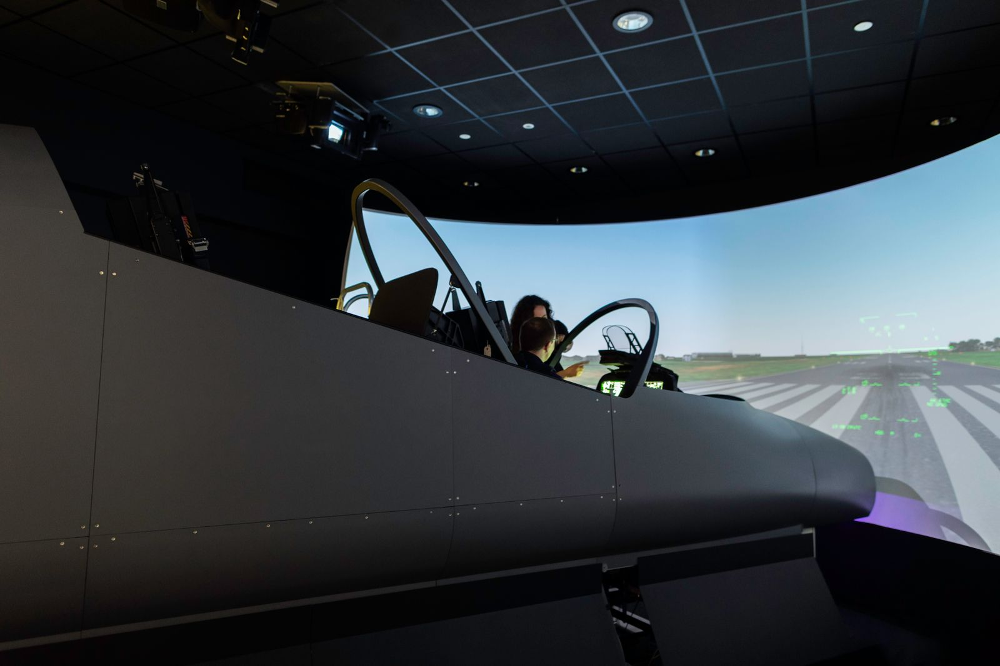

27
Flights commanded, research & training profiles
01 / Sub-orbital spacecraft commander · Las Cruces, New Mexico
I am Astrid Nyholm. I have commanded 27 suborbital flights, and I now train the crews and prepare the participants who fly them — for operators who would rather publish their safety case than their waiting list. This practice sells training, preparation and review. It does not sell tickets.
02 / The profile planner
A suborbital flight is a ballistic arc: a short burn, a coast to apogee, a fall back, and a long unpowered glide home. Pick a printed profile and the planner lays the arc out phase by phase — every number below is a sum or a difference of the figures printed in Table P1, and the workings are shown.
| Phase | T+ window | What happens |
|---|---|---|
| Boost | T+0 → T+70 s | Powered ascent. The loud, heavy phase — and nearly the shortest. |
| Coast up | T+70 s → T+170 s | Engine off. Weightlessness begins at cut-off; the arc tops out at apogee. |
| Coast down | T+170 s → T+255 s | Falling back toward the interface, still weightless, Earth filling the windows. |
| Glide | T+255 s → T+660 s | Drag, then an unpowered glide to the runway. The longest phase — and the one training is for. |
| Profile point | T+ (s) | Segment (s) | Altitude / note |
|---|---|---|---|
| Profile A · Boost — MECO | 70 | 70 | 52 km at main engine cut-off |
| Profile A · Coast up — Apogee | 170 | 100 | 104 km — the top of the arc |
| Profile A · Coast down — Re-entry interface | 255 | 85 | 75 km — drag begins to bite; weightlessness ends |
| Profile A · Glide — Touchdown | 660 | 405 | Unpowered glide to the runway |
| Profile A · Crosses 100 km, ascending | 150 | — | Kármán line — FAI convention |
| Profile A · Crosses 100 km, descending | 195 | — | |
| Profile A · Crosses 80.5 km, ascending | 128 | — | 50 miles — US convention |
| Profile A · Crosses 80.5 km, descending | 212 | — | |
| Profile B · Boost — MECO | 75 | 75 | 58 km at main engine cut-off |
| Profile B · Coast up — Apogee | 195 | 120 | 118 km — the top of the arc |
| Profile B · Coast down — Re-entry interface | 300 | 105 | 78 km — drag begins to bite; weightlessness ends |
| Profile B · Glide — Touchdown | 720 | 420 | Unpowered glide to the runway |
| Profile B · Crosses 100 km, ascending | 168 | — | Kármán line — FAI convention |
| Profile B · Crosses 100 km, descending | 228 | — | |
| Profile B · Crosses 80.5 km, ascending | 140 | — | 50 miles — US convention |
| Profile B · Crosses 80.5 km, descending | 262 | — |
Basis. Representative profiles for a feathered rocketplane class, drawn from published operator material for the class; an operator’s own flight manual governs any real flight. Weightlessness is counted from main engine cut-off (MECO) to the re-entry interface, where atmospheric drag begins to bite — the convention this practice briefs. It is a convention; other operators count differently, which is why the endpoints are printed. “Space” is printed twice on purpose — 100 km (Kármán, FAI) and 80.5 km (50 miles, US). Which line your certificate uses is a paperwork question, not a physics one.
03 / Services register
Four services, all of them on the ground. The flight itself belongs to the operator; what this practice sells is everything that makes the flight boring in the right ways.
04 / The preparation standard
A ticket buys a seat; it does not buy readiness. Every participant on a programme I sign off completes the same standard, whether they paid six figures for the seat or won it in a raffle:

05 / Fees & planning estimate
The fee shape is published because a programme’s cost should be arguable before anyone signs anything. What moves the price: cohort size first, programme duration second, travel to the spaceport third. The findings of a review never move the price — a clean report costs what a hard one costs.
| Line | Basis | Rate | Notes |
|---|---|---|---|
| Crew training day | Per day | $2,400 | Syllabus delivery, simulator supervision, check rides |
| Profile & safety review day | Per day | $2,800 | Document review, profile analysis, written findings |
| Participant preparation | Per participant | $850 | Three training days, screening coordination, flight-day rehearsal |
| Simulator block | Per programme, fixed | $6,500 | Facility hire passed through at the booked rate; no margin taken |
The estimator produces a planning figure, not a quote: a written proposal follows a scoping call, and the signed figure is the one in the proposal. Travel beyond southern New Mexico is billed at cost. No fee on this page buys, reserves or discounts a flight ticket — this practice has none to sell.
06 / From the engagement files
An operator’s first commercial season: 24 participants to prepare, one commander’s signature required before any of them flew. Two were told not to fly yet — one referred back to the aeromedical examiner, one short of the egress standard. Both kept their seats. One flew the following season.
“Astrid grounded two of our customers and I braced for the refund fight. There wasn’t one — she had explained the standard before we sold a single seat, in writing, in the brochure. The following season one of them flew, and sent her a photograph. That is what the preparation buys.”
Head of Training, suborbital operator — attached to File 01, First Season
“Eleven minutes is the product, and it is enough. But it is eleven minutes — anyone selling it as more is selling the brochure, not the flight.”Astrid Nyholm — the honesty page, in full on About
Operators planning a season, participants preparing to fly, insurers and spaceports wanting an outside read — the enquiry form is the front door. It is answered by email within two working days.